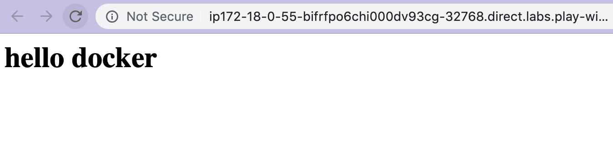

デバッグ
Dockerの動作確認方法について学びます。
準備¶
今まで使用してきたインスタンスではいくつかのコマンドを打ってきました。そのためImage/Container/Volume/Networkが残っています。
削除して使用するのもありなのですが、ここからは新しいインスタンスを起動して新しい環境で作業を行いましょう。

現在の状態を確認する¶
まず、新しい環境で以下コマンドと結果と同じ、Dockerのコンポーネントが何もない状態であることを確認してください。
"NETWORK ID" は環境毎に異なるため、3つ存在することが確認できれば問題ありません。
$ docker images
REPOSITORY TAG IMAGE ID CREATED SIZE
$ docker container ls -a
CONTAINER ID IMAGE COMMAND CREATED STATUS PORTS NAMES
$ docker volume ls
DRIVER VOLUME NAME
$ docker network ls
NETWORK ID NAME DRIVER SCOPE
57b365c4c259 bridge bridge local
0de6477937b5 host host local
fcb28176b5e7 none null local
コンテナのライフサイクル¶

どんなソフトウェアでも言えることですが、ライフサイクルを意識することは重要です。
ここではコンテナの状態の確認方法を学んでいきましょう。
短命なコンテナ¶
docker run でpythonで"hoge"と出力するコンテナを起動してみます。
$ docker run python python -c 'print("hoge")'
Unable to find image 'python:latest' locally
latest: Pulling from library/python
e79bb959ec00: Pull complete
d4b7902036fe: Pull complete
1b2a72d4e030: Pull complete
d54db43011fd: Pull complete
69d473365bb3: Pull complete
7dc3a6a0e509: Pull complete
68cd774d0852: Pull complete
2ef86095a118: Pull complete
42c091edeef0: Pull complete
Digest: sha256:7e6c00cc553fdce06c1bcfcbf34c73a0f3623a8fc9ce88c8fb91671f2cbc0dab
Status: Downloaded newer image for python:latest
hoge
Dockerイメージをpullした後に、引数に渡した python -c 'print("hoge")' を実行してくれました。
docker container ls -a を実行することで、現在のホスト上の全てのコンテナを見ることが可能です。
$ docker container ls -a
CONTAINER ID IMAGE COMMAND CREATED STATUS PORTS NAMES
910343e33060 python "python -c print(\"ho…" About a minute ago Exited (0) About a minute ago determined_visvesvaraya
"STATUS"の列を確認すると "Exited (0) About a minute ago" とあります。
「終了コードが0 (正常終了) で、既に終了している」ことがわかりました。
もう一度同じコマンドを実行してみましょう。
今度はDockerイメージのpullをスキップしてコマンドが実行されました。
既にPullしたコンテナがある場合はそのイメージを使用するためです。
コンテナの状態を確認してみましょう。
$ docker container ls -a
CONTAINER ID IMAGE COMMAND CREATED STATUS PORTS NAMES
0d99a0e9e15a python "python -c print(\"fu…" 5 seconds ago Exited (0) 4 seconds ago nervous_laland
910343e33060 python "python -c print(\"ho…" 14 minutes ago Exited (0) 14 minutes ago determined_visvesvaraya
コンテナが2つに増えています。
これはコンテナは実行される度に 新しい環境 が立ち上がるためです。
終了したコンテナをもう一度起動することも可能です。
$ docker container ls -a
CONTAINER ID IMAGE COMMAND CREATED STATUS PORTS NAMES
0d99a0e9e15a python "python -c print(\"fu…" 5 seconds ago Exited (0) 4 seconds ago nervous_laland
910343e33060 python "python -c print(\"ho…" 14 minutes ago Exited (0) 14 minutes ago determined_visvesvaraya
$ docker start -a 910343e33060
hoge
$ docekr start -a 0d99a0e9e15a
fuga
長命なコンテナ¶
次に、Webサーバのような基本的に起動し続ける長いライフタイムのコンテナがどのような状態になるのか確認しましょう。
例のごとくnginxを起動します。
コンテナの状態を確認しましょう。
$ docker container ls -a
CONTAINER ID IMAGE COMMAND CREATED STATUS PORTS NAMES
491f97ab763b nginx "nginx -g 'daemon of…" 23 seconds ago Up 21 seconds 0.0.0.0:32769->80/tcp silly_hellman
0d99a0e9e15a python "python -c print(\"fu…" 39 minutes ago Exited (0) 39 minutes ago nervous_lalande
910343e33060 python "python -c print(\"ho…" About an hour ago Exited (0) 35 minutes ago determined_visvesvaraya
nginxのコンテナが"STATUS" が "Up 21 seconds" となっており、実行されていることがわかります
もう一つnginxコンテナを起動してみましょう。
$ docker run -P -d nginx
dbd0565d0ca200224125f9d995186f0e6a49e14be20498ae0204a667f033d7ce
$ docker container ls
CONTAINER ID IMAGE COMMAND CREATED STATUS PORTS NAMES
dbd0565d0ca2 nginx "nginx -g 'daemon of…" 4 seconds ago Up 3 seconds 0.0.0.0:32770->80/tcp pedantic_mclaren
491f97ab763b nginx "nginx -g 'daemon of…" 3 minutes ago Up 2 minutes 0.0.0.0:32769->80/tcp silly_hellman
コンテナが2つ起動起動されています。
Play with Docker上でもポートが2つ開放されているはずです。
試しに起動中のコンテナを1つ停止させてみましょう。
docker stop の引数にコンテナIDを渡すことで停止させることができます。
$ docker stop 491f97ab763b
491f97ab763b
$ docker container ls -a
CONTAINER ID IMAGE COMMAND CREATED STATUS PORTS NAMES
dbd0565d0ca2 nginx "nginx -g 'daemon of…" 2 minutes ago Up 2 minutes 0.0.0.0:32770->80/tcp pedantic_mclaren
491f97ab763b nginx "nginx -g 'daemon of…" 5 minutes ago Exited (0) 5 seconds ago silly_hellman
0d99a0e9e15a python "python -c print(\"fu…" 44 minutes ago Exited (0) 44 minutes ago nervous_lalande
910343e33060 python "python -c print(\"ho…" About an hour ago Exited (0) 41 minutes ago determined_visvesvaraya
"STATUS" が "Exited" になり、停止されました。
Play with Docker上では開放されているポートが1つになったはずです。
コンポーネントの削除¶
最後に起動したコンテナとイメージを削除しましょう。
コンテナの停止
コンテナの削除
イメージの削除
削除されていることの確認
$ docker images
REPOSITORY TAG IMAGE ID CREATED SIZE
$ docker container ls -a
CONTAINER ID IMAGE COMMAND CREATED STATUS PORTS NAMES
コンテナの中に入る¶
起動したコンテナの中に入ることも可能です。
試しに先程起動したnginxの中に入ってみましょう。
docker exec コマンドに起動したコンテナのIDを渡すことで入ることが可能です。
コンテナ内にbashで入ってnginxファイルの存在を確認してみましょう
$ docker exec -it 85a6b023ba49 bash
root@85a6b023ba49:/# ls /usr/share/nginx/html/
50x.html index.html
まずはいくつかのコマンドのインストールから行いましょう。
現在起動しているコンテナ内のプロセスを確認してみます。
nginxが起動していることが分かると思います。
root@85a6b023ba49:/# ps -ae
PID TTY TIME CMD
1 ? 00:00:00 nginx
6 ? 00:00:00 nginx
28 pts/0 00:00:00 bash
3716 pts/0 00:00:00 ps
実際nginxが起動しているか、 localhost:80 へアクセスしてみましょう。
root@85a6b023ba49:/# curl localhost:80
<!DOCTYPE html>
<html>
<head>
<title>Welcome to nginx!</title>
<style>
body {
width: 35em;
margin: 0 auto;
font-family: Tahoma, Verdana, Arial, sans-serif;
}
</style>
</head>
<body>
<h1>Welcome to nginx!</h1>
<p>If you see this page, the nginx web server is successfully installed and
working. Further configuration is required.</p>
<p>For online documentation and support please refer to
<a href="http://nginx.org/">nginx.org</a>.<br/>
Commercial support is available at
<a href="http://nginx.com/">nginx.com</a>.</p>
<p><em>Thank you for using nginx.</em></p>
</body>
</html>
nginxが参照しているhtmlを更新し、Play with Docker で表示されているリンクからアクセスして実際に書き換えることができたか確認してみましょう。
root@85a6b023ba49:/# echo "<h1>hello docker</h1>" > /usr/share/nginx/html/index.html
root@85a6b023ba49:/# cat /usr/share/nginx/html/index.html
<h1>hello docker</h1>
root@85a6b023ba49:/# exit

ログを確認する¶
ログを確認するために、nginxをデーモンとして起動しましょう。
$ docker run -P -d nginx
Unable to find image 'nginx:latest' locally
latest: Pulling from library/nginx
27833a3ba0a5: Pull complete
e83729dd399a: Pull complete
ebc6a67df66d: Pull complete
Digest: sha256:c8a861b8a1eeef6d48955a6c6d5dff8e2580f13ff4d0f549e082e7c82a8617a2
Status: Downloaded newer image for nginx:latest
85a6b023ba49f8f29b1f35eeebbbd2f49811fe1420952538429cf71ea5a92436
何度か先程起動したnginxへアクセスを行った後、nginxコンテナのIDを指定することでログを確認することができます。
$ docker logs 85a6b023ba49f8f29b1f35eeebbbd2f49811fe1420952538429cf71ea5a92436
2019/03/30 18:53:31 [error] 6#6: *1 open() "/usr/share/nginx/html/robots.txt" failed (2: No such file or directory), client: 172.18.0.1, server: localhost, request: "GET /robots.txt HTTP/1.1", host: "ip172-18-0-55-bifrfpo6chi000dv93cg-32768.direct.labs.play-with-docker.com"
172.18.0.1 - - [30/Mar/2019:18:53:31 +0000] "GET /robots.txt HTTP/1.1" 404 556 "-" "Mozilla/5.0 (Macintosh; Intel Mac OS X 10_14_3) AppleWebKit/537.36 (KHTML, like Gecko) Chrome/73.0.3683.86 Safari/537.36" "-"
172.18.0.1 - - [30/Mar/2019:18:53:31 +0000] "GET / HTTP/1.1" 200 612 "-""Mozilla/5.0 (Macintosh; Intel Mac OS X 10_14_3) AppleWebKit/537.36 (KHTML, like Gecko) Chrome/73.0.3683.86 Safari/537.36" "-"
172.18.0.1 - - [30/Mar/2019:18:53:31 +0000] "GET /favicon.ico HTTP/1.1" 404 556 "http://ip172-18-0-55-bifrfpo6chi000dv93cg-32768.direct.labs.play-with-docker.com/" "Mozilla/5.0 (Macintosh; Intel Mac OS X 10_14_3) AppleWebKit/537.36 (KHTML, like Gecko) Chrome/73.0.3683.86 Safari/537.36" "-"
2019/03/30 18:53:31 [error] 6#6: *2 open() "/usr/share/nginx/html/favicon.ico" failed (2: No such file or directory), client: 172.18.0.1, server:localhost, request: "GET /favicon.ico HTTP/1.1", host: "ip172-18-0-55-bifrfpo6chi000dv93cg-32768.direct.labs.play-with-docker.com", referrer: "http://ip172-18-0-55-bifrfpo6chi000dv93cg-32768.direct.labs.play-with-docker.com/"
docker logs で表示されるログは起動したプロセスの 標準出力と標準エラー です。
ファイルに吐き出されたログは docker logs コマンドでは基本的に閲覧することはできません。
停止したコンテナの中に入る¶
アプリケーションをコンテナで開発していると予期せぬタイミングでコンテナ(上で動かしているプロセス)が死んでしまうことが多々あります。
例えば、コンテナ上に書き込んだファイルはコンテナ内からしか見ることができませんが、アプリケーションによってはエラーが起きた際の情報をファイルへ書き込むこむようなものもあります。
そういったコンテナに最適化されていないアプリケーションは多く、トラブルシュートの際に停止したコンテナの中に入る必要があることがあるでしょう。
docker start を使用したいところですが、 docker start の場合起動時のコマンドが実行されてしまいます。
そのコマンドが原因で起動直後に落ちてしまう場合、 docker start が使用できません。
ここではコンテナ上へディレクトリを作成し、そのディレクトリを確認する手順を紹介します。
mkdir でディレクトリを作成し、実行したコンテナが停止していることを確認する。
$ docker run amazonlinux:2 mkdir /tmp/hoge
Unable to find image 'amazonlinux:2' locally
2: Pulling from library/amazonlinux
f64ae36417d7: Pull complete
Digest: sha256:d4a4328d679534af47c7a765d62a9195eb27f9a95c03213fca0a18f95aa112cd
Status: Downloaded newer image for amazonlinux:2
$ docker container ls -a
CONTAINER ID IMAGE COMMAND CREATED STATUS PORTS NAMES
32eec81f3aaa amazonlinux:2 "mkdir hoge" 3 minutes ago Exited (0) 3 minutes ago angry_hypatia
docker commit で停止したコンテナから exited-container という名前の新しいイメージを作成します。
$ docker commit 32eec81f3aaa exited-container
sha256:497ce4f6a88aef387a4c78864fb6f3c06e03d9458f69168f10500e1f643e8af6
$ docker images
REPOSITORY TAG IMAGE ID CREATED SIZE
exited-container latest 497ce4f6a88a 2 minutes ago 162MB
amazonlinux 2 01da4f8f9748 4 weeks ago 162MB
exited-container イメージを起動して、コンテナ内で作成したディレクトリが存在するか確認する。
amazonlinux:2 イメージ
"amazonlinux:2"はAmazonが開発したCentOS7ベースのAmazonLinux2というOSです。
AWSでEC2(VM)を使用する際に基本的に選択されるOSなのですが、Dockerイメージも配布されています。
Dockerイメージとしても配布されており、軽量で非常に優秀なため使用しました。